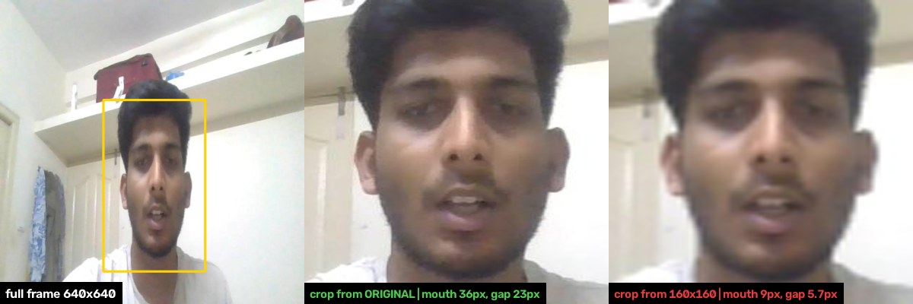

1. 전처리 계획
카메라 프레임을 모델 입력으로 만드는 추론 직전의 5단계입니다. 핵심은 원본 해상도에서 얼굴을 자르는 것, 보정은 효과가 확인될 때만 켜는 것, 입력 정규화를 학습과 똑같이 맞추는 것입니다.
-
1
카메라 설정 고정ON
전원 주파수(60Hz)에 맞춰 노출을 정하고, 자동 노출·화이트밸런스는 완만하게 하거나 캘리브레이션 뒤 잠급니다. 깜빡임과 밝기 출렁임을 입력 단계에서 없앱니다.
노출 1/120s의 정수배
-
2
프레임 품질 검사ON
밝기와 선명도를 재서 불량 프레임은 보정하지 않고 버리고 "판정 보류"로 알립니다. 어두운 화면을 억지로 보정하면 잘못된 결과가 나옵니다.
휘도 40 미만·220 초과, 선명도 기준값의 30% 미만
-
3
얼굴·상체 위치 확보ON
축소 프레임(640)에서 위치를 찾고 다음 프레임에 이어 씁니다. 여러 얼굴이 잡히면 착석 영역 안의 가장 큰 얼굴을 고릅니다.
재검출 1~2초마다 또는 추적 실패 시
-
4
얼굴 영역 크롭ON
원본 해상도에서 잘라 모델 입력 크기로 줄입니다. 축소본에서 자르면 입술 간격이 뭉개집니다(아래 그림). 롤 정렬은 기본 OFF.
입력 192~256px, 여유 1.3~1.5배
-
5
밝기 보정 · 입력 정규화보정 OFF정규화 ON
밝기 보정은 얼굴 영역에만, 같은 녹화로 효과가 확인될 때만 켭니다. 입력 크기·채널 순서·mean/std·리사이즈는 학습과 INT8 보정 설정과 완전히 같아야 합니다.
CLAHE clip 1.5~3.0, 감마 0.6~0.85 / 1.1~1.3

같은 얼굴을 원본에서 자르면 입 폭 36px·입술 간격 23px, 160×160 축소본에서 자르면 9px·5.7px입니다.
720p는 80cm까지 충분하고, 100cm(빨강)에서 입력 크기보다 작아집니다. 얼굴 실제 폭 200mm, 수평 화각 70° 가정.
입력 조건 가정 · 쓰지 않는 처리 · 전처리 검증
입력 조건 가정: 1280×720@30fps, 수평 화각 70~78° 저왜곡, 모니터 상단 중앙·눈높이 이상, 사용 거리 50~80cm, 얼굴 정면 ±30° 이내, 단일 사용자, 60Hz 조명. 마스크·모자·역광 창문은 지원 범위 밖입니다. 현장이 다르면 해당 단계를 다시 설계합니다.
| 쓰지 않는 처리 | 상태 | 이유 |
|---|---|---|
| 전체 프레임 CLAHE | 금지 | 역광·모니터 빛이 통계를 지배해 오히려 나빠짐. 쓴다면 얼굴 영역에만 |
| 노이즈 제거 | OFF | 카메라 내장 처리로 충분. 시간 방향 잡음은 후처리에서 |
| 화이트밸런스 보정 | OFF | 랜드마크 모델은 주로 밝기에 의존한다고 가정 |
| 렌즈 왜곡 전체 보정 | OFF | 광각이면 필요한 점의 좌표만 보정(후처리) |
| 전처리 검증 | 방법 | 통과 기준 |
|---|---|---|
| 입력 정규화 일치 | 학습·추론 파이프라인에 같은 이미지를 넣어 입력 텐서 비교 | 불일치 0 |
| 얼굴 폭 충분성 | 실제 녹화에서 얼굴 영역 폭 측정 | 사용 거리 전체에서 입력 크기 이상 |
| 품질 검사 보류 비율 | 실제 녹화에서 버린 프레임 비율 | 보류가 잦아 쓰기 어렵지 않을 것 |
| 보정 on/off 효과 | 같은 녹화를 on/off로 처리해 점 지터·입술 간격 편향 비교 | 개선이 확인된 항목만 켬 |
| 보드 처리 시간 | 1~5단계를 보드에서 실측 | 프레임 주기(약 33ms) 안 |
2. 후처리 계획
모델이 낸 점·마스크를 경고 알림으로 바꾸는 단계입니다. 순간적인 동작은 걸러내고, 나쁜 상태가 기준 시간(입벌림 8초, 거북목 30초) 이상 이어질 때만 LCD에 경고를 띄웁니다.
입벌림 판정 사례
- 발동 기준
- 해제 기준
- 그래프 = 입 벌림 비율(MAR)의 시간 변화
-
습관성 입벌림멍하니 벌린 상태가 발동 기준 위에서 8초 이어짐
 경고
경고 -
말하기짧은 개폐가 반복됨 → 주기 규칙으로 제외
 정상 유지
정상 유지 -
하품크게 벌렸다가 곧 닫힘 → 지속 시간 미달로 제외정상 유지
-
경고 중 잠깐 덜 벌림발동 기준 아래로 내려가도 해제 기준 위면 경고 유지 (깜빡임 방지)경고 유지
-
컵·손으로 가림입술 점의 신뢰도가 낮음 → 판정 보류, 타이머 정지판정 보류
-
A
사용자 유지
전처리에서 고른 사용자를 프레임 간 이어서 추적합니다. 지나가는 사람은 무시하고, 수 초 이상 못 찾으면 판정 타이머를 리셋합니다.
리셋 시간은 실측으로 정함
-
B
좌표 정리순서 고정
불확실한 점 제외 → 왜곡 좌표 보정(광각일 때만) → 튀는 값 제거 → 빠진 값 처리 → 떨림 완화(One Euro). 튄 값이 스무딩에 섞이면 찾을 수 없어서 이 순서입니다.
결측 0.2초까지 마지막 값 유지
-
C
수치 · 개인 기준 비교
거북목은 얼굴·상체 영역의 겹침·너비 비율·간격(3페이지), 입벌림은 입술 내측 간격 / 입 너비(MAR). 둘 다 약 10초 캘리브레이션으로 만든 개인 기준과 비교합니다.
거북목은 z-score 결합
-
D
판정
위 사례의 규칙입니다: 두 기준선(발동·해제), 지속 시간, 말하기·하품 제외, 가림·정면 이탈·화질 불량 시 보류.
입벌림 8초, 거북목 30초~3분
-
E
알림 조절
경고 후 쿨다운·스누즈·일일 상한을 두고, 자세를 고치면 즉시 해제합니다. 기준 자세는 자동 갱신하지 않고, 조명 변화·카메라 이동 때만 재캘리브레이션을 제안합니다.
수치는 사용자 테스트로 결정
후처리 검증
| 확인 항목 | 방법 | 목표 |
|---|---|---|
| 단계별 효과 | 같은 연속 작업 녹화에서 B단계·두 기준선·말하기 제외를 하나씩 끄고 다시 처리 | 오탐을 줄이지 못하는 단계는 제거 |
| 이벤트 정확도 | 음료·대화·손 가림이 포함된 녹화에서 알림 1회 = 1건으로 Precision/Recall | 거북목 ≥95%, 입벌림 ≥93% |
| 오탐율 | 알림 중 오알림 비율, 시간당 오알림 수 | ≤3% |
| 알림 지연 | 판정 확정부터 LCD 전환까지 보드에서 실측 | ≤100ms |
| 보류 비율 | 보류 구간 길이와 그 구간의 오탐 감소 | 보류가 잦아 쓸 수 없게 되지 않을 것 |
3. YOLO 적용 계획
거북목 판정에 쓸 얼굴·상체 영역을 YOLO-seg로 직접 파인튜닝합니다. 아직 학습 전이라 수치는 목표 또는 시작값입니다.
- 크기는?
- nano · 입력 640n으로 시작해 정체될 때만 s. 올려도 안 오르면 문제는 데이터
- 학습 모델은?
- YOLO26n-segCOCO 사전학습, face·upper_body 2클래스. 보드 변환이 안 되면 YOLO11n-seg
- 학습 방식은?
- 전이학습 + 백본 고정freeze=10, AdamW lr 0.001, Colab에서 E0~E5 비교
- 검증은?
- V1 → V5영역·CVA 상관 → INT8 변환 → 보드 지연 → 이벤트 정확도
바른 자세 · 얼굴 박스와 상체 박스 사이에 간격, 겹침 없음
거북목 · 얼굴이 커지고 내려와 상체와 겹침(빨강)
YOLO-seg는 객체마다 박스(사각형)와 마스크(윤곽 다각형)를 함께 냅니다. 박스 겹침(빨간 점선)은 대략적인 값이라, 신호로는 턱 경계가 정확한 마스크 겹침(빨간 면)과 얼굴/상체 너비 비율, 두 영역의 세로 간격을 씁니다. 개념도이며, 이 신호가 실제 목 각도(측면 CVA)와 함께 움직이는지는 V1b에서 먼저 확인합니다.
실험 E0~E5
같은 데이터·시드에서 한 번에 하나만 바꿔 val 마스크 mAP50-95로 비교합니다.
- E0 점검학습 전 val 1회, 소량으로 설정과 자동 배치값 확인
- E1 기준nano-seg, freeze=10 (이후 실험의 비교 기준)
- E2 고정 범위freeze=10 vs 전체 학습
- E3 크기n vs s, E1이 정체될 때만
- E4 증강mosaic 0.5 vs 0 (제품 화면은 한 사람이 크게 찍힘)
- E5 입력 크기640 vs 더 작게, 보드 지연(V3)과 함께
검증 V1~V5
앞 단계가 싸고 빠르므로 통과해야 다음으로 갑니다.
- V1 영역·신호마스크 mAP, 클래스별 AP. 정면 신호와 측면 CVA의 사람별 순위 상관
- V2 변환 손실ONNX → RKNN INT8, FP32 대비 mAP·IoU 하락 비교
- V3 보드 성능해상도별 지연 실측, ≤100ms·3~5fps
- V4 제품 정확도음료·대화·가림 포함 영상에서 이벤트 단위 ≥95%, 오탐 ≤3%
- V5 판정 보류가림·화질 불량에서 보류했는지, 너무 잦지 않은지
크기 근거 · 데이터와 라벨링 · 학습 설정
크기 근거: 720p를 640으로 줄여도 얼굴 폭은 60cm에서 약 115px, 80cm에서 약 85px, 어깨 폭은 약 230px(화각 70° 가정)이라 대상이 큽니다. 클래스가 2개라 nano로 충분할 가능성이 크고, 보드(RK3566급)에서 3~5fps·≤100ms를 지키면서 NPU를 얼굴 랜드마크와 나눠 써야 합니다. 입력을 320으로 줄이면 마스크 한 칸이 약 0.5cm → 1cm로 커져 턱 경계가 거칠어집니다.
- 데이터
- 라이선스를 확인한 웹캠 정면 상반신 공개 데이터 + 직접 촬영. 평가는 직접 촬영 데이터로
- 촬영 조건
- 조명 3종 × 안경 유무 × 자세(바른·약한·강한 거북목·손/컵 가림) × 거리(50·65·80cm)
- 규모·분리
- 약 600장·10명, 사람 단위로 학습 6 / 검증 2 / 테스트 2명
- 라벨
- face는 이마~턱, upper_body는 머리를 제외한 어깨선~가슴. 100장 시점에 다시 라벨링해 일관성 점검
- 도구
- SAM 기반 반자동 폴리곤으로 약 100장 → 1차 학습 → 모델 초안을 사람이 보정. SAM 3·DINO-X 같은 큰 모델로 초안을 만드는 방법도 검토(외부 서버는 촬영 동의를 받은 데이터만)
- 정답(CVA)
- 평가용 촬영은 측면 카메라를 동기 촬영해 실제 목 각도를 잼
| 학습 설정 | 결정 | 이유 |
|---|---|---|
| 백본 고정 | freeze=10, E2에서 전체 학습과 비교 | 학습 인원이 약 6명이라 전부 풀면 그 사람들의 얼굴·옷·방을 외울 위험. 머리를 뺀 upper_body는 COCO에 없는 경계라 E2로 확인 |
| 옵티마이저 | AdamW, lr0=0.001 고정 | auto는 반복 수가 1만 회를 넘으면 SGD로 바뀌어 실험 간 비교가 깨짐 |
| 배치 | E0에서 batch=-1 값을 확인한 뒤 고정 | Colab은 세션마다 GPU가 달라 자동 배치가 바뀔 수 있음 |
| 에폭 | epochs=300, patience=30 | val이 약 2명이라 점수가 출렁여 10~20이면 일찍 멈춤 |
| 증강 | mosaic 0.5 vs 0, multi_scale 끔 | 모자이크는 작은 사람 4명을 만들고 목 경계를 자름 |
| 재현성 | seed=0, deterministic=True, cache='ram' | val이 작아 시드 운과 실험 차이가 비슷할 수 있음 |
결과가 나쁠 때 · 미결 사항
| 증상 | 의미 | 대응 |
|---|---|---|
| 아무것도 안 잡힘 | 경로·라벨 문제 | data.yaml 경로, 클래스 번호, 신뢰도 임계값 순으로 확인 |
| upper_body AP만 낮음 | 목 경계 라벨 불일치 | 목 경계 규칙 재정의 후 재라벨링 |
| mAP50 높음 · mAP50-95 낮음 | 위치는 맞지만 윤곽이 대충임 | 라벨 윤곽 정밀화, 더 오래 학습 |
| 어두운 조명·안경에서만 낮음 | 그 조건 데이터 부족 | 해당 조건 촬영 추가 |
| mAP 높음 · CVA 상관 낮음 | 신호가 거북목을 반영하지 못함 | 겹침 대신 너비 비율 등으로 신호 재정의 |
- YOLO-seg의 RKNN 변환 가능 여부와 보드 연산량(마스크 출력부로 연산 증가)
- 모니터에 다가앉기와 거북목의 구분(둘 다 얼굴이 커짐)
- 공개 데이터셋 라이선스, YOLO 상업적 사용 시 라이선스 구매 필요
4. 모델 비교
YOLOE · DINO-X · SAM 3 · SigLIP · OCR · MediaPipe가 각각 무엇을 하고, 무엇을 받아 무엇을 내며, 어디서 돌아가는지 비교합니다.
이럴 때 이 모델
- 글로 대상을 지정해 실시간으로 찾고 싶다YOLOE
- 처음 보거나 드문 물체까지 찾고 싶다 (외부 서버 사용 가능)DINO-X
- 정확한 윤곽이 필요하거나 영상 속 대상을 따라가고 싶다SAM 3
- 위치는 필요 없고 이미지를 분류·검색하고 싶다SigLIP
- 이미지 속 글자를 읽고 싶다OCR
- 얼굴의 세밀한 점과 표정을 기기에서 실시간으로 얻고 싶다MediaPipe
| 모델 | 하는 일 | 입력 | 출력 | 추가 학습 | 실행 환경 | 사용 예시 |
|---|---|---|---|---|---|---|
| YOLOE | 대상을 지정해 찾는 실시간 개방형 탐지·분할 (YOLO 계열) | 이미지 + 텍스트 또는 예시 이미지, 프롬프트 없이도 가능 | 박스 · 마스크 · 클래스 | 불필요 (파인튜닝 가능) | GPU 권장, 작은 모델은 Jetson급·저해상도 CPU | model = YOLOE("yoloe-26s-seg.pt")model.set_classes(["cup", "hand"])학습 없이 컵·손 검출 |
| DINO-X | 드문 물체까지 찾는 개방형 탐지·이해 통합 모델 (IDEA Research) | 이미지 + 텍스트 또는 시각 프롬프트, 프롬프트 없이도 가능 | 박스 · 마스크 · 키포인트 · 영역 설명 | 불필요 | API (외부 서버) | "person . cup" 프롬프트로 박스를 받아 라벨링 초안 만들기 |
| SAM 3 | 지정한 개념에 해당하는 모든 대상을 분할하고 영상에서 추적 (Meta) | 이미지·영상 + 짧은 명사구 또는 예시 이미지 | 마스크 · 대상별 ID | 불필요 | GPU 서버 | "yellow school bus"로 영상 속 노란 스쿨버스를 모두 분할·추적 |
| SigLIP | 이미지와 문장을 같은 공간의 벡터로 바꾸는 이미지-텍스트 모델 (Google) | 이미지 + 문장 | 임베딩 · 유사도 점수 (위치 없음) | 불필요 (제로샷) | GPU 권장 | 사진과 "a photo of a cat" 같은 문장의 유사도로 분류, 문장으로 이미지 검색 |
| OCR | 이미지 속 글자를 찾고(검출) 읽는(인식) 기술 | 이미지 | 글자 박스 · 문자열 | 불필요 (언어별 모델 선택) | CPU·엣지 가능 | 영수증·간판·번호판 읽기 (PaddleOCR, EasyOCR, Tesseract) |
| MediaPipe | 얼굴의 3D 랜드마크와 표정 계수를 뽑는 온디바이스 솔루션 (Google, Face Landmarker) | 이미지 · 영상 · 실시간 스트림 | 3D 점 478개 · 표정 계수 52개 · 머리 자세 행렬 | 불가 (고정 모델) | 모바일·온디바이스 실시간 | 입술 점으로 입 벌림 정도 계산, 표정에 맞춰 아바타 움직이기 |